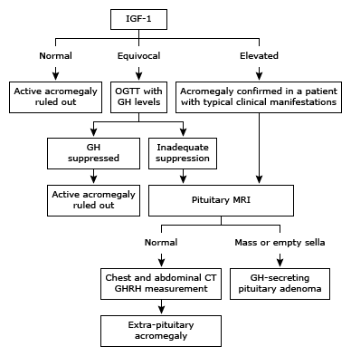

Algorithm for the diagnosis of acromegaly

IGF-1: insulin-like growth factor-1; OGTT: oral glucose tolerance test; GH: growth hormone; MRI: magnetic resonance imaging; CT: computed tomography: GHRH: growth hormone-releasing hormone.
Adapted from: Melmed S, Anterior pituitary. In: Current Practice of Medicine, Korenman S (Ed), 1996.
Graphic 71636 Version 10.0